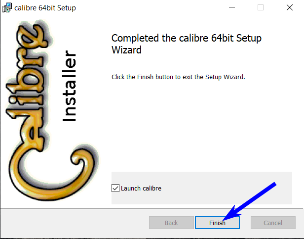

Instalación y puesta en marcha de Calibre
Ingresamos "Calibre" en el buscador.
Pulsamos en el primer resultado.
Elegimos la versión según nuestro sistema operativo.

La primer opción es la recomendada.

Guardamos el instalador en nuestro escritorio.
Hacemos doble clic en el icono.
Aceptamos los términos y luego pulsamos en "Install".
Finalizamos la instalación pulsando en "Finish".

Se abre una ventana que nos preguntará dónde guardar los archivos. Normalmente se deja por defecto.
Pulsamos "Siguiente".
Dejamos esta configuración por defecto y pulsamos "Siguiente".

Concluimos la configuración pulsando "Finalizar" (Si hace falta, podemos reconfigurar las veces que resulten necesarias).
Listo!!! Tenemos Calibre instalado y en condiciones de agregar títulos.